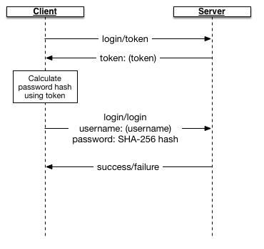
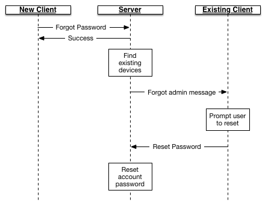
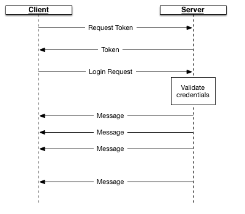

The basic networking protocol between the client and server is implemented using JSON over HTTP; this is for ease of implementation and ease of installation on a given network. Some assumptions were made about how the server would be installed.
When the server is installed, the verify page (to verify operation of the server) will present a URL for clients to use when setting up their chat clients. This URL is the base URL for all requests. For example, if the base URL given is https://mychatserver.com, then the base URL for all API requests are given as https://mychatserver.com/ss/api/1; this indicates the SecureChat server API, using version 1 of the protocol. (Future updates can change the URL by changing the appended URL to ss/api/2, etc.)
Requests then append the appropriate command to the URL. For example, the request to determine if the server is operational would be the path https://mychatserver.com/ss/api/1/login/status.
For the rest of this document, we will only show the URL component that is added to the base URL.
Requests are sent as POST commands over HTTP regardless of the nature of the request, and any parameters are sent as JSON in the body of the POST request. Responses are received as JSON using a standard format described below.
The rational goes to the heart of the HTTP protocol design. Fundamentally 'GET' requests are requests to get a specific resource uniquely identified by the URI of the request, and 'PUT' requests are requests to save a specific resource. In a sense, you can think of these commands as being akin to a file system: 'GET' reads a file named in the URI, and 'PUT' saves a file named in the URI.
These semantics have ramifications on how the protocol works, especially in light of HTTP proxy servers that may be inserted into the network flow between the client and server. Specifically if you make two 'GET' requests in a row for the same URI, a proxy server is not required to forward the second request to the back-end server. Further, if a 'PUT' request is followed by a 'GET' request for the same resource, a proxy server may return the body of the 'PUT' request in the subsequent 'GET' request without ever communicating with the back-end server.
Fundamentally 'POST' means "execute the command given by the URI", and is equivalent to running the executable program at the URI, taking the body of the 'POST' command as the program's input, and returning the program's output as the result. (Early web servers in fact did just that: a POST command would resolve the file that would be served using GET, and run the command at that file location.)
Proxy servers are required to pass POST commands through and return the results without caching. After all, a POST command may have side effects on the server that by implication GET and PUT do not.
So our design fundamentally assumes that HTTP is a conduit which carries the command to the back-end server, and HTTP errors allude to problems with communicating with the back-end. Requests are then processed and the results are returned through this conduit. As an aside, this implies that errors with those commands would result in a success (200) code being sent: for example, if a command is sent that the user is not authorized to execute, the HTTP result would be 200, but the payload would return an error code indicating the user is not authorized. (Compare to other designs which would return 403: User not authorized as the HTTP result.)
All responses from the server come as a JSON object. Every object is guaranteed to have at least one key/value pair: the "success" key, which is set to the boolean value of true if the call was successful, and false if it failed.
A successful return result from the server looks like:
{
"success": true,
"data": {
return data, documented below
}
}
Note that the data field is optional; if a request does not return data, the data field may be missing. Also note that the data field is always a JSON object.
If there is an error, an error code and error message is returned, along with an optional stack trace (for debugging purposes). (A stack trace should never normally be returned.)
{
"success": false,
"error": error code as integer, below
"message": human readable error, only used for debugging
"exception": [
string, exception stack
]
}
The error code is an integer indicating the error. Both the message field and the optional exception field are used strictly for diagnostic purposes; always use the integer returned in the error code for presenting an error message to the user. (The message should never be parsed or compared to a list of strings.)
The error codes that can be returned by the server are located in Errors.java:
| Error | Meaning |
| 1 | Returned if there was an exception on the back-end server. This will be accompanied with an exception stack frame for debugging. |
| 2 | Username/password pair could not be validated. |
| 3 | An unexpected problem, such as a duplicate device ID found during account creation. |
| 4 | The user is not currently authenticated. This can happen if the server expires the credentials (and requires the user to re-authenticate). |
| 5 | Unable to create a new account because the username is in use. |
| 6 | The device ID could not be found. |
| 7 | The notification service is not running, and the client should switch to polling instead. |
| 8 | The username was not found. |
The protocol requires that we pass a public key around. We use a non-standard method for communicating public keys associated with a device.
Keep in mind an RSA key consists of two integers E and N; messages are encoded using a public key by converting the message to a series of integers M, and calculating M = ME mod N. This means that for us to represent a public key we need to know the values E, N and the number of bits S.
Public keys are sent and received as a comma-delimited string E,S,N, where E is a decimal (base-10) representation of the public key E, S the number of bits (in decimal base-10), and N the modulus (again, decimal base-10). For example, if we were to calculate a public RSA key with the values E=7 and N=33 (with S=6, the number of bits necessary to represent N), our public key string would be
7,6,33
The back-end server stores passwords hashed using the SHA-256 protocol. We further use hashing in a two-step protocol during login. This implies that the password is hashed twice; this is by design. The implication of performing a two-step login process is that replay attacks are harder; a third party cannot determine the user's password either by sniffing packets or by examining the contents of the client or the server's database. A third party cannot even log in by examining the hash sent during the login process.
The following commands do not require authentication.
Checks the status of the server. Used to determine if the client URL was correctly entered. This only returns a success result.
Calling arguments:
None
Return results:
Success as documented above
Returns a token that is used when salting the password hash for logging in.
Calling arguments:
None
Return results:
"token": returned token for logging in
Attempts to log the user in. The password must be hashed using the token returned by a previous call to the login/token endpoint. The password is hashed using the following algorithm:
The reason for "double-hashing" is so that we can store the password on the client and on the server using the hashed value P' instead of the original value P.
Calling arguments:
"username": Username
"password": P", hashed using method above.
Return results:
Success or error code as documented above
Sent when a client indicates he forgot his password during account setup. This triggers a message to any device that is currently registered to the user to reset his password; this then continues the reset password flow with the second command below.
Note that this API does not return failure. This is to prevent someone from querying the API to determine which users exist on the server without logging in first.
Note that the reset flow works as documented below:
Calling arguments:
"username": Username
Return results:
Success as documented above
Creates a new account on the server. This creates a new password and associates a device with the account.
Calling arguments:
"username": Username
"password": Hashed password P' (see login/login above)
"deviceid": The UUID identifying the device
"pubkey": The public key for this device
Return results:
Success or error code as documented above
The following commands require account authentication. If given when the user is not authenticated, the command is refused.
Updates the forgotten password. This requires a token which was sent as the payload of a reset password message sent to this device. (See the documentation on getting messages for more information.)
Security note: A user who has access to your device while your device is logged in represents a security risk; a bad guy with possession of your unlocked device can reset your password.
Calling arguments:
"token": Reset password token received from back end
"password": Hashed password P' (see login/login above)
Return results:
Success or error code as documented above
Allows a user to change their password. Requires the old password. This also requires a token generated by the login/token endpoint above.
Passwords are encrypted as described above in the login/login endpoint.
Calling arguments:
"oldpassword": P", the old password
"newpassword": New password P'
Return results:
Success or error code as documented above
All commands below require authentication.
Return a list of all the devices registered to the specified user. This is used to determine the device public keys for encrypting sent messages.
Calling arguments:
"username": The username of the user to query
Return results:
"userid": The integer user ID for this user
"devices": array of devices, as JSON objects.
Each device in the device array contains the keys:
"deviceid": The UUID of the device,
"publickey": The public key for that device.
Example return result:
{
"userid": 5,
"devices": [
{
"deviceid": "11111111-2222-3333-4444-555555555555",
"publickey": "5,6,33"
},
{
"deviceid": "66666666-7777-8888-9999-000000000000",
"publickey": "7,6,33"
}
]
}
Adds a new device to the logged in account.
Calling arguments:
"deviceid": the device ID for the device being added
"pubkey": The device public key
Return results:
Success or error code as documented above
Removes a device from the logged in account. If the device is not registered to the current account, nothing will happen.
Calling arguments:
"deviceid": the device ID for the device being added
Return results:
Success or error code as documented above
All commands below require authentication.
Messages all have the following format:
| messageID | A monotonically increasing value uniquely identifying each message in the system. This identifier should be used to sort messages in proper order as well as for identifying messages for removal from the back-end server |
| senderID | The sender this message is associated with. |
| senderName | The username of the sender |
| toflag | This is set to false if the sender sent the message, and true if the sender received the message. Used to reconstruct the full conversation on a user's device, when messages are sent from another device. |
| received | The timestamp when the message was received. |
| message | The encrypted message, encoded using Base-64 encoding. |
Admin messages (such as the request to reset a password) are sent with the senderID = 0, and the body of the message (when decrypted) is a JSON object payload. At present the only request is to reset the password; the format of the message sent is:
{
"cmd": "forgotpassword",
"token": Reset password token
}
Obtains the notification hostname and port for receiving notifications. A server is not required to provide this port, and this can return an error.
Calling arguments:
None.
Return results:
"host": Host name of notification port
"port": Port (index) of the notification port
Obtains all messages that are currently backlogged for the user.
Calling arguments:
None.
Return results:
"messages": An array of message objects as described above
Send messages to the list of devices. Typically when a sender sends a message, they send the message to a list of devices by device ID, both for the sender the message is sent to, and to the list of devices owned by the sender. This allows other devices to have a full record of the conversation.
Note that the ID returned is the message ID of the last message in the array of messages sent. This is used by the client to discover the message ID for the message being sent: a sending client sends the message to itself on the server, so that it may obtain a message ID for sorting purposes and to determine the received date from the server. Yes, this is a bit of a kludge.
Calling arguments:
"messages": An array of message objects, described below.
Return results:
"messageid": The ID of the last message uploaded.
The array of messages sent is described below:
| deviceid | The device identifier the message is being sent to. |
| message | The encrypted message, encrypted with the device public key. |
| checksum | An SHA-256 checksum of the sent message before it is encrypted. This is used by the messages/dropmessages API to determine if the client has successfully decrypted the message prior to deleting it. The checksum is calculated as C = SHA-256(message + "PmsgzhD") |
| destuser | Optional field. Set if the deviceid belongs to the logged in user, in order to mark the message as being sent to the specified user. This is used when uploading sent messages to reconstruct the conversation on devices shared by the logged in user. |
Removes the received message from the server.
Note that sending messages and dropping messages are used hand-in-hand in order to send messages to end-devices and remove them from the server when successfully received. Messages that are not successfully removed will be repeatedly sent via the messages/getmessages API call
Calling arguments:
"messages": An array of messages to be deleted. The format of each object is given below..
Return results:
Success or failure as described above
Each entry in the array of messages is described below:
| messageid | The ID of the message to remove from the back end. |
| checksum | The checksum of the message to delete. This checksum is calculated as described in the messages/sendmessages API above. Because the checksum is not sent to the device, the only way a device can calculate this checksum is by successfully decrypting the message. |
In order to receive messages in near-real time, the SecureChat server may open a TCP/IP port which can be used to receive notifications. This works by the client connecting to the port, logging in using the protocol below, and if successful, listening for messages sent by the back-end.
If the port cannot be successfully opened, the client must poll the messages/getmessages API endpoint instead.
When connecting, the following exchange takes place:
All messages sent or received through the notification channel are sent as a byte array, with escaped bytes. Messages are always separated by byte $00. If the message contains byte $00, it is escaped as $01 $01. Byte pattern $01 in the original message is escaped as $01 $02. All other bytes are sent without modification.
The first step is to request a token. This is the equivalent of calling login/token. The packet sent to the back end is:
{ "cmd": "token" }
The received message is:
$21 [token]
That is, the received packet starts with the byte $21, and the rest is a UTF-8 encoded string representing the token to use when encoding the password.
The next step is to provide the user credentials. This is similar to the login/login API call above (using the same hashing algorithms), except that the device ID of the device requesting notifications is also added to the request:
{
"cmd": "login",
"username": Username,
"password": P" hashed password
"deviceid": Device identifier of the device requesting notifications
}
If the request failed, the one-byte message below is sent, and the connection closed:
$22
If the request succeeded, messages (starting with the ones queued by the server) are sent one at a time in the following format. (See the description of the message fields in the discussion above for more information.)
| offset | length | description |
| $00 | 1 | $20, the byte used to indicate the type of message |
| $01 | 1 | toflag field; 1 if true, 0 if false |
| $02 | 4 | messageId, as a 4 byte integer in network encoding order |
| $06 | 4 | senderId, as a 4 byte integer in network encoding order |
| $0A | var | received timestamp, encoded as a UTF-8 string, preceeded by a 2 byte length (as the number of bytes in the string, encoded as a 2 byte integer in network encoding order) |
| var | sender name, encoded as a UTF-8 string, preceeded by a 2 byte length (as the number of bytes in the string, encoded as a 2 byte integer in network encoding order) | |
| 4 | Length of the message to follow | |
| var | The message as an array of bytes |
When a message is received, the receiver is expected to call the devices/dropmessages API call for each message received. When complete, the receiver can close the network connection.